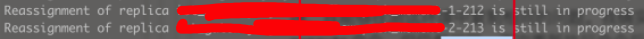

Some Kafka Partitions Stay "is still in progress" After Reassign
background
After Kafka executes reassign, some partitions are still in progress. The log is as follows:

position
After investigation, it was found that the cause of the problem was that when reassigning, the partition was moved from one disk of the same broker to another disk. This operation is not currently supported. The official explanation is as follows
- How to move replica between log directories on the same broker
Problem statement:
Kafka doesn’t not allow user to move replica to another log directory on the same broker in runtime. This is not needed previously because we use RAID-10 and the load is already balanced across disks. But it will be needed to use JBOD with Kafka.
Currently a replica only has two possible states, follower or leader. And it is identified by the 3-tuple (topic, partition, broker). This works for the current implementation because there can be at most one such replica on a broker. However, now we can have two such replicas on a broker when we move replica from one log directory to another log directory on the same broker. Either a replica should be identified by its log directory as well, or the broker needs to persist information under the log directory to tell the destination replica from source replica that is being moved.
In addition, user needs to be able to query list of partitions and their size per log directory on any machine so that they can determine how to move replicas to balance the load. While these information may be retrieved via external tools if user can ssh to the machine that is running the Kafka broker, development of such tools may not be easy on all the operating systems that Kafka may run on. Further, a user may not even have the authorization to access the machine. Therefore Kafka needs to provide new request/response to provide this information to users.
Solution:
The idea is that user can send a AlterReplicaDirRequest which tells broker to move topicPartition directory (which contains all log segments of the topicPartition replica) from the source log directory to a destination log directory. Broker can create a new directory with .move postfix on the destination log directory to hold all log segments of the replica. This allows broker to tell log segments of the replica on the destination log directory from log segments of the replica on the source log directory during broker startup. The broker can create new log segments for the replica on the destination log directory, push data from source log to the destination log, and replace source log with the destination log for this replica once the new log has caught up.
The general idea is that a replica has two states, follower or leader, and a replica is distinguished by topic-partition-broker. Note that there is no data disk or path. If the replica is migrated from one disk to another on a broker, the status of the replica will conflict.
The solution at this time is to use AlterReplicaDirRequest.